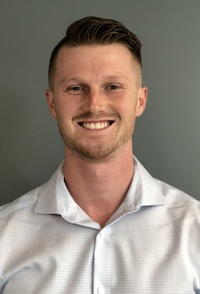

About Me

Introduction
I began my journey at UC Davis studying chemical engineering. After graduating and beginning work in Automation for a company called Zymergen, I found my passion in software engineering. I quickly became the software expert on my team and have been the go-to person for questions as well as mentoring. The software that I work on is full stack application development, mostly with HTML and CSS/Bootstrap for our front-end development and JavaScript, C# and Python for our back-end development. With almost 2 years of experience in this position, I have decided I want to expand my software experience by taking on new challenges. In order to round out and sharpen some more of my software tools, I decided to begin a certification program through UC Berkeley for full stack web development. Along with this, I want to further challenge myself by entering a new position where I can take some of my application centric skills and apply them to web based software engineering, providing a unique skillset and perspective to a future employer.
Where I'm From
My parents both immigrated to the United States from Canada before I was born. They planted roots in Roseville, California, a suburb of Sacramento. I later moved to Davis for college and soon after began to move closer to the bay area as I progressed through jobs out of college. I am now currently residing in Oakland, California, looking for the next step in my journey.
What my favorite hobbies are
I have a few hobbies that I keep close and committed to. I love staying active which includes lifting weights, running, hiking, playing a variety of sports (mainly volleyball). I also really enjoy reading and try to read at least one book a month. If you don't find me doing any of those things, I am probably spending time with my friends (probably at brunch over some mimosas).
What my dream job is
Realizing how much I love software engineering has shown me that my career aspirations are set on being an extremely skilled software engineer. The tell tale sign that you love doing something is when you find yourself pulling out your laptop to do some coding at 11PM just for the fun of it.
Where I live
I currently live in Oakland, California, five minutes from Lake Merritt. I have always loved the culture and diversity around the bay area and planting roots in Oakland has been just another of the great life decisions that I have made thus far.
Why I want to be a web developer
If I haven't hammered it home enough by now, I truly love working with software and collaborating with colleagues and friends on software that can change the world to make it a better place. Having power over software comes with a lot of responsibility, and my intentions are to use that for the betterment of our global society.